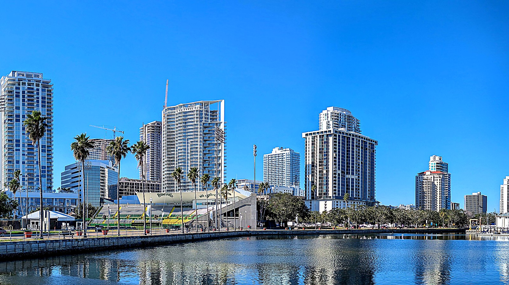

Tampa Bay · Head-to-Head
Tampa or St. Petersburg?
The Bay area's defining retirement decision: the big-league metro with two perfect 10s, or the walkable arts city across the bridge, twenty-five minutes apart on the same surge-prone bay. Here is the honest version of the choice.
The short version
Choose Tampa for the strongest practical package in Florida: a perfect 10 of 10 for both airport access and healthcare (TPA plus Tampa General and Moffitt Cancer Center), inside the bigger metro with more lifestyle variety. Choose St. Petersburg for the life you actually walk through: 8 of 10 walkability against Tampa's 6, the deeper arts scene, and the modest cost edge across both home value and monthly retiree budget. The catches are shared and identical: the same surge-vulnerable bay scored 2 of 10, the same $7,136 insurance estimate, the same 6 of 10 safety.
The scored comparison
Both cities pulled from the same database, scored the same way. The split is unusually clean: Tampa owns the practical rows, St. Pete owns the livability rows, and the bay owns them both.
| Metric | Tampa FLORIDA | St. Petersburg FLORIDA |
|---|---|---|
| Cost & money | ||
| Typical home value | $400,000 | $375,000 ✓ |
| Estimated retiree budget | $5,500–$6,800/mo | $5,200–$6,500/mo ✓ |
| Budget tier (1 = least expensive) | 2 of 5 | 2 of 5 |
| Property tax rate | 0.78% | 0.78% |
| Home insurance estimate | $7,136/yr | $7,136/yr |
| Our 10-dimension scores | ||
| D1 Airport access | 10/10 ✓ | 8/10 |
| D2 Budget | 6/10 | 6/10 |
| D3 Healthcare | 10/10 ✓ | 7/10 |
| D4 Climate resilience & insurance | 2/10 | 2/10 |
| D5 Tax friendliness | 9/10 | 9/10 |
| D6 Walkability | 6/10 | 8/10 ✓ |
| D7 Outdoor recreation | 6/10 | 7/10 |
| D8 Active wellness | 7/10 | 8/10 |
| D9 Safety | 6/10 | 6/10 |
| D10 Community & culture | 8/10 | 9/10 |
| Climate | ||
| Warm winters | 9/10 | 9/10 |
| Hot summers (lower = milder) | 4/10 ✓ | 7/10 |
| Humidity (lower = drier) | 9/10 | 9/10 |
| Extreme heat exposure (lower = less) | 7/10 | 7/10 |
Scored 0–10 against the 100 cities in our database; higher is better (except where noted). Checkmarks mark the stronger city in each row; ties and near-ties are left unmarked. Data: RetireMeHere city database, June 2026.
The five tradeoffs that actually decide it
1. The money is closer than the rivalry suggests, and it leans St. Pete.
St. Petersburg's typical home is slightly cheaper, $375,000 against $400,000, and its monthly retiree budget runs about $300 lower across the range ($5,200–$6,500 versus $5,500–$6,800). Both cities now sit at budget tier 2, and the property tax rate (0.78%) and citywide insurance estimate ($7,136 a year) are identical on paper. None of those gaps is large; over a long retirement the monthly differential adds up to real money, but nobody should pick between these two cities on cost alone. The honest summary is that St. Pete wins the money rows by modest, consistent amounts, and the question is whether Tampa's practical edge on the next two rows is worth a modestly higher cost of living.
2. Tampa's two perfect 10s are the practical headline.
Tampa is the only Florida city in our database holding a perfect 10 for airport access and a perfect 10 for healthcare at the same time. TPA is a major hub perennially rated among the best airports in the country, and the healthcare bench is the region's destination tier: Tampa General Hospital, nationally ranked, and Moffitt Cancer Center, NCI-designated. St. Pete scores a solid 8 and 7 on the same rows, and here is the honest mechanism: a meaningful part of St. Pete's own scores is Tampa's infrastructure, reached across a bridge. If frequent travel or complex ongoing care anchors your retirement, Tampa removes the bridge from the equation.
3. St. Pete wins the everyday on foot.
Walkability is the widest lifestyle gap on the card: 8 of 10 against Tampa's 6, with our database noting St. Pete's Walk Score of 94, the highest of any Florida city we cover. The daily texture follows: the continuous chain of bayfront parks, the 26-acre Pier, Beach Drive's café row, and Central Avenue's galleries, all in walking or biking range of downtown addresses. Tampa has walkable pockets, Hyde Park and the Riverwalk among them, but it is a driving metro at heart. If the question is what an ordinary Tuesday feels like, St. Pete wins it.
4. Big-league metro or arts peninsula: two different temperaments.
Tampa's 8 of 10 community score is the big-city version: pro sports nearly year-round, a business and events calendar, Ybor City's historic district, and the energy of Florida's most complete metro. St. Pete's 9 is the arts version: the Dalí Museum, the Chihuly Collection, the SHINE murals, the Florida Orchestra, and a downtown that reads like a gallery with a waterfront. Neither is better; they attract different retirees. The useful question is which calendar you would actually use: a Lightning game on a Thursday, or a museum and a long walk home along the bay.
5. The bay does not care which side you pick.
Climate resilience scores 2 of 10 in both cities, and our database notes Tampa Bay as among the most surge-vulnerable metros in the country, a vulnerability the 2024 storm season made concrete across the region. The insurance estimate is the same $7,136 a year statewide proxy on either side of the bridge, and safety is an identical 6 of 10. The shape of the two cities, though, is not the same: St. Petersburg occupies a peninsula with water on three sides, and most of the city falls inside a hurricane evacuation zone. Tampa wraps the head of the bay and reaches inland for miles, with sizeable neighborhoods well removed from the surge maps. A specific street can run far above or below that statewide insurance figure, and neighborhood choice carries more weight in this pairing than in most we have compared. Choosing between Tampa and St. Petersburg does not change the regional risk; it can change how exposed your specific block is.
Go deeper on each city
Full editorial profiles: neighborhoods, healthcare, a typical week, and the honest fit lists.

Florida's most complete metro: a perfect-10 airport, a perfect-10 healthcare bench, and the best value in the state, examined honestly.
Read the Tampa profile →
The Sunshine City: Florida's most walkable downtown, a serious arts scene anchored by the Dalí, and the surge math told straight.
Read the St. Petersburg profile →Tampa vs. St. Petersburg: the questions people actually ask
Is Tampa or St. Petersburg better for retirement?
Neither wins outright; the scorecard splits along a clean practical-versus-lifestyle line. Tampa takes airport access (a perfect 10 vs. 8) and healthcare (a perfect 10 vs. 7, anchored by Tampa General and Moffitt). St. Petersburg takes walkability (8 vs. 6, with Florida's highest Walk Score at 94), community and culture (9 vs. 8), a slightly cheaper typical home, and a modestly lower monthly retiree budget. Climate, taxes, insurance, and safety are identical. Choose Tampa for logistics and medicine; choose St. Pete for the day-to-day life.
Is Tampa or St. Petersburg cheaper for retirees?
St. Petersburg, by a modest but consistent margin. Its typical home value is slightly lower ($375,000 vs. $400,000 as of June 2026), and its estimated monthly retiree budget runs about $300 lower across the range ($5,200–$6,500 vs. $5,500–$6,800). Both cities now sit at budget tier 2 of 5, with identical property tax rates (0.78%) and statewide home insurance estimates ($7,136 a year). The pattern is clean: St. Pete wins every variable cost row by a small margin and the fixed costs are the same. Two cities this similar in structure should not be picked on cost alone.
Is healthcare better in Tampa or St. Petersburg?
Tampa, clearly, and it is the biggest gap on the scorecard. Tampa scores a perfect 10 of 10 with Tampa General Hospital, nationally ranked, and Moffitt Cancer Center, an NCI-designated center. St. Petersburg scores 7 of 10: Bayfront Health and St. Anthony's cover everyday and emergency care well, but the region's elite institutions sit across the bay in Tampa, roughly 30 minutes away. For retirees managing complex or ongoing specialty care, that bridge belongs in the decision.
Is St. Petersburg more walkable than Tampa?
Yes, decisively. St. Petersburg scores 8 of 10 for walkability against Tampa's 6, and our database notes its Walk Score of 94, the highest of any Florida city we cover, with a Bike Score of 90. Downtown St. Pete's waterfront parks, Pier, and Central Avenue support a genuinely car-light retirement. Tampa has strong walkable pockets, including Hyde Park and the Riverwalk, but functions overall as a driving metro.
Do Tampa and St. Petersburg have the same hurricane risk?
Effectively yes on the score, but the geometry isn't identical. Both cities score 2 of 10 for climate resilience in our database, which notes Tampa Bay as among the most surge-vulnerable metros in the country. The 2024 storm season made that exposure concrete across the region. St. Petersburg sits at the peninsula tip with hurricane evacuation zones covering most of the city, while Tampa proper has more inland depth and more neighborhoods set well back from the bay. Insurance estimates are identical at $7,136 a year as a statewide proxy, with waterfront addresses far above that on both sides. Choosing between these cities does not reduce the regional hurricane risk; either choice needs an insurance budget, attention to elevation and flood zone, and an evacuation plan.
More city matchups
Still deciding?